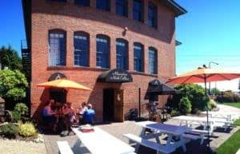
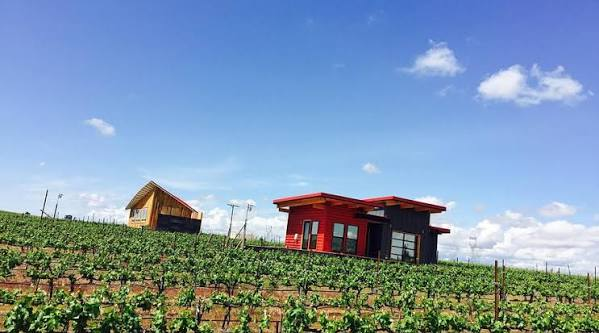
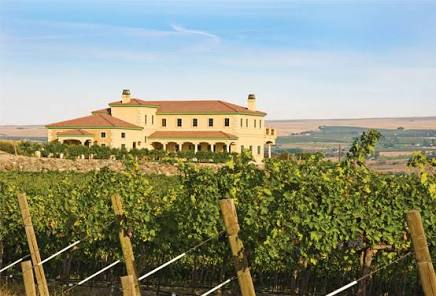
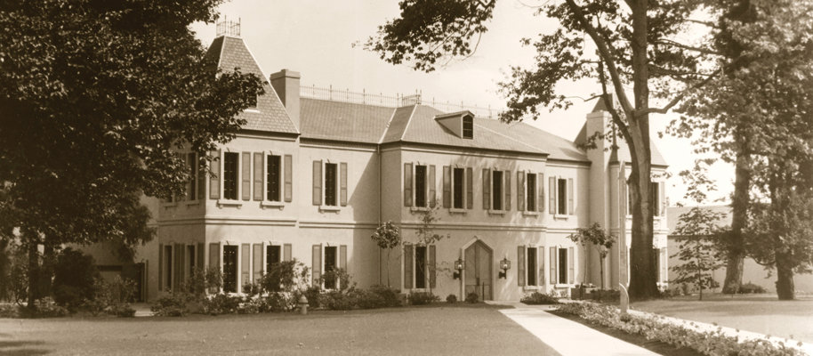
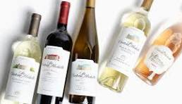
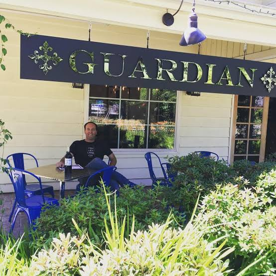
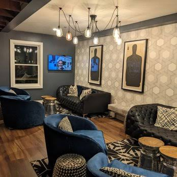

Washington Wineries
Alexandria Nicole Cellers

First a Vineyard...
When Jarrod and Ali first christened their land in the Horse Heaven Hills of Washington, the choice of its name was a simple one. Providence played a significant role in the birth of Alexandria Nicole Cellars and its estate vineyard. Paying tribute to that force – so central to their dream come true – naturally came the naming of Destiny Ridge Vineyard.
Jarrod was born in Prosser and learned the secrets of successful vineyard management as assistant viticulturalist under the tutelage of Dr. Wade Wolfe when both worked for The Hogue Cellars. It was here that wine grape growing and winemaking became Jarrod’s passion.
While working for Hogue, Jarrod oversaw the inspection of grapes and made grower recommendations to assist in helping grape varietals achieve their desired characteristics. However, a pivotal moment occurred during a routine vineyard inspection in Horse Heaven Hills, which brought about a paradigm shift in Jarrod’s career and life. On that particular day, he spotted a nearby section of barren land with a gentle southward slope overlooking the Columbia River. From that moment on, visions of vineyard blocks danced in Jarrod’s mind.
Soon after that moment, a casual conversation with an old friend led Jarrod to telling the story of his Horse Heaven Hills land discovery and his vision of planting a vineyard there. Jarrod’s friend Rob Mercer (a member of a well-known local farming family) was almost as excited as Jarrod. The level of shared excitement escalated when Rob realized the land of Jarrod’s dream was owned by his father… Bud Mercer. Before long, the Mercer family joined with the Boyle family and the dream of a vineyard on the hillside… and Destiny Ridge Vineyard was born. The first vines were planted in the fall of 1998.
Then a Winery...
The original plan for the vineyard was to supply fruit to produce small case lots for other wineries. However, when the vines reached complete production, the quality of the fruit was so exceptional that Jarrod’s thoughts shifted to envision creating his own wines from the grapes grown on Destiny Ridge Vineyard. With control over viticultural choices in his vineyard and a winery of his own, Jarrod could monitor fruit quality from bud to bottle!
In September 2004, the state-of-the-art Alexandria Nicole Cellars winery (named after Jarrod’s wife, Ali Boyle) was constructed. The winery was designed to suit the production of small-lot handcrafted wines.
Overlooking the majestic Columbia River, Alexandria Nicole Cellars’ winery and vineyard provide an awe-inspiring backdrop for various special events, appealing to wine and food enthusiasts and community fundraisers alike. Private tours and barrel tastings can be arranged for an unforgettable experience- tasting the power of destiny in its place of origin.
Visit Alexandria Nicole Website
Chandler Reach Winery

Chandler Reach Estate Winery
Deeply rooted in Washington’s Yakima Valley AVA, Chandler Reach Winery represents two generations of family committed to producing exceptional wines from our estate vineyard. Derived from inspiration that owner, Len Parris, found on a 1997 trip to Italy, our winery was established to cultivate authentic and memorable experiences, reminiscent of those we enjoyed in Italy; and to share our wine the Tuscan way, with good friends and family. Over two decades later, our inspiration, dedication and passion for our craft are evident in each vintage.
Estate-Grown Wines
Elegant Italian-inspired wines from Yakima Valley. Our grapes are grown on our 42 acre vineyard in Benton City, Washington. Situated at the base of the Horse Heaven Hills and Chandler Butte, overlooking the Yakima River and Red Mountain. Located in Benton City, our estate vineyard overlooks Red Mountain and grows premium grape varietals including Sangiovese, Barbera, Syrah, Cabernet Sauvignon, Cabernet Franc, and Merlot. Our Italian-inspired Villa opened in 2005 and is home to our tasting room and event facility. In 2014 we opened a second tasting room in the heart of Woodinville’s Hollywood District, capturing the essence of our estate winery, with greater accessibility from the Seattle area.
Visit Chandler Reach Winery's Website
Chateau Ste. Michelle

Visionaries of Washington Wine
When Chateau Ste. Michelle was founded in 1967, many believed great wine could only come from Italy or California. Our founders set out to prove otherwise—and in doing so, established Washington’s first premium winery. From the beginning, Chateau Ste. Michelle helped put Washington State on the global map through terroir-driven winemaking, innovation, and award-winning craftsmanship. Today, it remains the most iconic winery in Washington and a leader in shaping the future of American wine.
Visit Chateau Ste. Michelle's Website
Guardian Cellars

A cop and a reporter meet
FALL IN LOVE AND START A WINERY...
When Jerry met Jennifer he was known around the Woodinville wine scene as the chemist, turned cop, who was almost always around to help with wine work. Jerry had been volunteering 40-plus hours a week at several wineries, including Mark Ryan Winery and Matthews Cellars, assisting friends with harvest or in the tasting room. When Jerry and Jennifer opened the Guardian tasting room in November 2007, all 375 cases – a mix of Gun Metal, Syrah and Cabernet, were gone by the end of the day. When the 2005 vintage was released months later, it was gone within a few days. For harvest 2022, the winemaking team produced 16 different wines between the two labels; a total of just over 11,000 cases.
Visit Guardian Cellars' Website